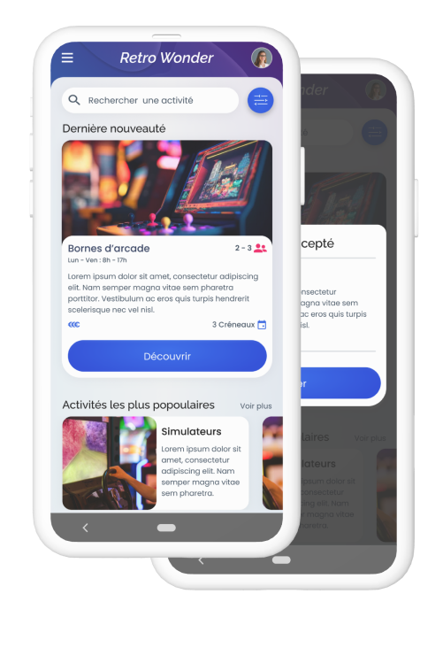

Retro Wonder
Outils utilisés
Mon rôle
la conception à la livraison
Aperçu du projet
Le produit
RetroWonder est une application de prévisualisation et de réservation d’activité. Elle se place comme une plateforme permettant à différents centre de loisir de proposer leur activités et de prendre les réservations.
L'objectif
Designer une application qui permet de faciliter la découverte et le processus de réservation d’activité.
Le problème
La difficulté de trouver des activités et de les réserver. Centraliser la découverte et la réservation d’activité.
Durée du projet
Juin - Octobre 2023
Comprendre l'utilisateur
Problèmes utilisateur
Recherche d'activité
La difficulté de facilement trouver des activités à réaliser en familles ou entre amis
Manque d'informations
Les informations liés aux activités manque parfois de pertinence. Elle ne couvre pas les problèmes de tous les utilisateurs.
Recherche d'activité
Les systèmes de réservations ne sont parfois pas implémenté, incomplet ou difficile d’utilisation.
Personna : Anita Granger
Anita est une adulte ayant une vie de famille qui a besoin de savoir à l’avance si les activités sont adaptées à son enfant en situation de handicap car elle souhaite que toute sa famille puisse s’amuser même son fils handicapé.

AGE: 34
EDUCATION: Master de Psychologie
VILLE D'ORIGNE: Strasbourg, France
FAMILLE: Vie avec sa compagne et deux enfants
OCCUPATION: Psychologue
“Je veux que mes enfants s’amusent comme les autres enfants tout en restant à leurs côtés.”
Anita est une psychologue qui travaille dans son propre cabinet et fait partie d’une association pour enfant handicapé. Elle est en couple depuis plusieurs années. Elles ont décidé d’adopter deux enfants, dont Jarod qui est handicapé depuis sa naissance. Anita veut trouver des lieux adaptés à ses enfants ainsi que des activités qu’elle peut partager avec sa conjointe et leurs enfants.
Objectifs
- S’assurer que les activités soient accessibles pour son enfant handicapé.
- Pouvoir participer aux activités le plus possible.
- Passer du temps avec sa compagne.
Frustations
- Il y a un manque d’indication sur la difficulté des activités et l’âge recommandé en amont.
- Pouvoir participer aux activités le plus possible.